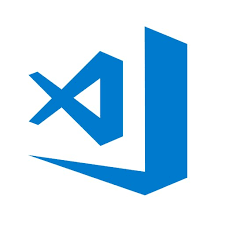
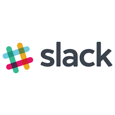
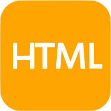
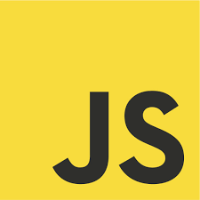
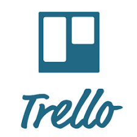

Co się działo w pierwszym tygodniu
Pierwszy tydzień był rozruchowy. Trwała jeszcze sprzedaż, ciągle nas przybywało na Slacku :P
Poznaliśmy takie programy jak:
Visual Studio Code
Slack
Naszym zadaniem było zainstalowanie programu VSC oraz komunikatora Slack.
Dołączyłam też do
grupy na facebook’u.
Stworzyłam też folder dev – mam możliwość ćwiczenia na Windows i Mac. To pozwala
poczuć różnice ;)
Na koniec
pobawiłam się z kodem podmieniając treść na stronie, zamieniając obrazki, ikonki i wyrzucając sekcje.


Co się działo w drugim tygodniu
W drugim tygodniu Maciek przedstawił nam warstwy strony – w tak zabawy sposób, że ciężko tego nie
zapamiętać :D Zalewający sąsiad innych sąsiadów.
Dowiedziałam się (w końcu) co to jest
semantyczny
HTML i przypomniałam sobie jego podstawowe
znaczniki.
Dzięki validatorowi (link) mogę na bieżąco sprawdzać swój HTML.
Poznałam podstawowe funkcje
css
i wstawiłam do swojego pliku html odwołanie do css.
Pobawiłam się z DevTools i nauczyłam się
kopiować
np. kolor z jakiejś strony.


Co się działo w trzecim tygodniu
Na samym początku trzeciego tygodnia poznaliśmy Kanban - spis widoczny.
Fajnym narzędziem do jego
zastosowania jest Trello (link).
W html zastosowaliśmy nowe znaczniki takie jak: article, class, id,
href i src.
W css poznaliśmy selektor klasy - czyli kropkę oraz selektor id - czyli
#(hash).
Ustaliliśmy również hierarchię znaczników: !important -> style"" -> #name -> .name ->
element.
Dowiedzieliśmy się jak działa przeglądarka, co składa się na adres strony oraz poznaliśmy
kody HTML:
1xx: hold on
2xx: here you go
3xx: go away4xx: you fucked up
5xx: I fucked
up
I doczekaliśmy się JavaScript != Java. JavaScript implementuje rzeczy ze specyfikacji
ECMAScript.
W JS występują dwie zmienne:/
const - rzeczy mające stałą strukturę - nie można
ich podmieniać
// let - rzeczy, które możemy przypisywać wielokrotnie, ale definiujemy
//
tylko raz!
Na koniec Maciek pokazał nam Terminal - mieliśmy też zadanie domowe, w którym trzeba było
chodzić po folderach.
Ja dodatkowo dowiedziałam się, że na MacOS można ustawić wygląd terminala -
jakie było moje zdziwienie kiedy po raz pierwszy włączyłam „czarne okienko” i wyskoczyło mi białe :D.

